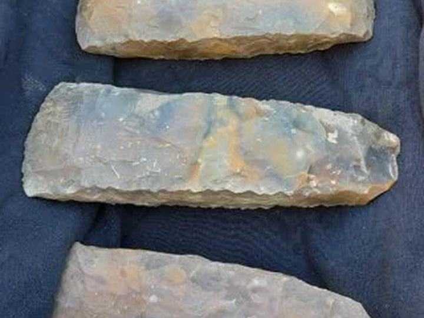
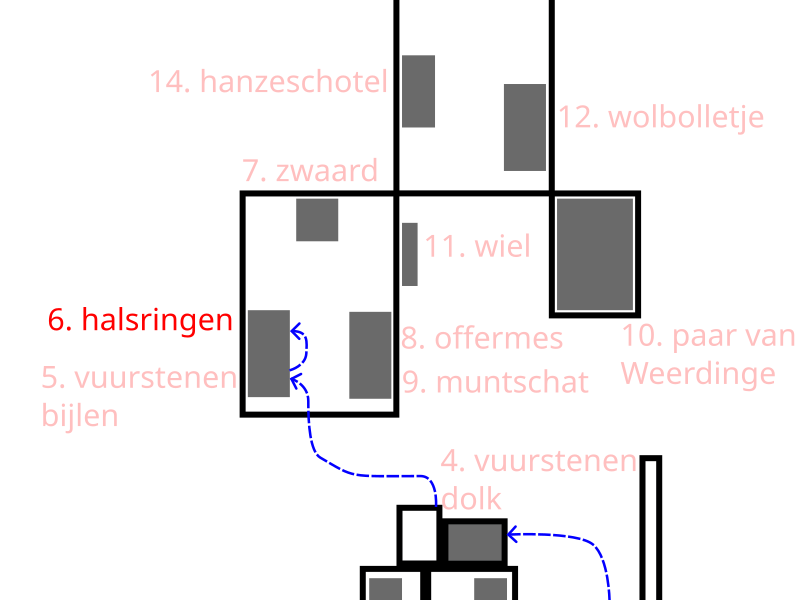

5. Drie grote vuurstenen bijlen uit Collendoorn bij Hardenberg (ca 3450-2750 v.Chr.)


Hier zie je drie grote vuurstenen bijlen uit Collendoorn, bij Hardenberg. Ze werden in 2022 gevonden en dateren uit de Trechterbekerperiode, tussen 3400 en 2750 voor Christus. Dat is meer dan vijfduizend jaar geleden.
De bijlen lagen dicht bij elkaar, aan de rand van een nat gebied in het dal van de Overijsselse Vecht. Er zijn geen sporen van een huis of een graf gevonden. Daarom denken archeologen dat de bijlen
hier bewust zijn achtergelaten. Misschien waren het offers aan de goden, als dank of als vraag om hulp voor een goede oogst of vruchtbaarheid.
De bijlen zijn opvallend groot en waarschijnlijk gemaakt in Noord-Duitsland of Zuid-Scandinavië. Ze zijn te groot om in het dagelijks leven goed te gebruiken, en er zijn geen duidelijke gebruikssporen gevonden. Dat maakt het extra waarschijnlijk dat ze een bijzondere, rituele betekenis hadden.
Zulke vondsten zijn zeldzaam in Nederland. Ze laten zien dat mensen in de prehistorie niet alleen praktische voorwerpen maakten, maar ook kostbare objecten bewust in het landschap achterlieten, op plekken die voor hen een speciale betekenis hadden.
Wil je meer weten over de Trechterbeker periode, druk dan op de "Meer info" knop.
Het volgende luisterpunt is: 6. Vier gouden halsringen van Olst.